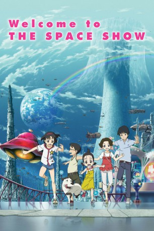

#3260 Welcome to the Space Show
 
 IMDB-Wertung: 6.8 / 10
IMDB-Wertung: 6.8 / 10  Metascore: 0
Metascore: 0 
Nichts könnte aufregender sein als eine Reise ins All. Doch kaum im Weltraum angekommen, müssen die Kinder feststellen, dass die direkte Verbindung zu Erde gekappt wurde und sie einen anderen Weg zurück finden müssen. Ihnen bleiben fünf Tage, bis der Klassenausflug zu Ende ist und ihre Eltern feststellen werden, dass sie verschwunden sind. Eine spannende und abenteuerreiche Weltall-Odyssee und der Wettlauf gegen die Zeit beginnen...
Jahr: 2010
Dauer: 130 Minuten
FSK: 6
Land: Japan Studio: AniplexTonspuren: DD5.1 - ,
Untertitel: Deutsch,
Auflösung: 720p (1280x720) Größe: 2150 MB
Genre: Sci-Fi, Abenteuer, Animation/Trick, Familie
Regisseur: Kôji Masunari, Masaaki Yuasa
Drehbuch: Hideyuki Kurata, Hideyuki Kurata, Kôji Masunari, Tomonori Ochikoshi, Stephanie Sheh
Soundtrack: Yoshihiro Ike
Darsteller:
Datei: X:\Kinder Anime\Div Anime\Welcome to the Space Show (2010, FSK6, 1280x720).mkv seit 25.02.2016
Festplatte: Kinder-Filme+Trick
 Es gibt insgesamt 40 Filme in der Gruppe 'Kinder Anime\Div Anime'
Es gibt insgesamt 40 Filme in der Gruppe 'Kinder Anime\Div Anime'